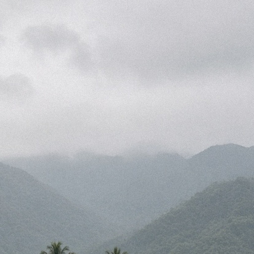

Fox Trot @FoxTrot
報名季到了，先挑跑得完的🦊
1/10 宜蘭雙礁馬：11/15 23:59 截止
2/27 高樹六堆馬：11/15 中午開報
3/7 臺北國道馬：1/7 截止，全馬有門檻
4/10 杏輝宜蘭馬：12/15 截止
以官方頁為準，你衝哪場？
回覆轉發喜歡
FT-002待審v2每日五平台B 日 · 賽事資訊2026年11月12日（四）預定發布 2026年11月12日（四）
整理宜蘭四季絕代雙礁馬（11/15 截止）、高樹六堆騰飛馬（11/15 開報）、臺北國道馬（1/7 截止）、杏輝宜蘭馬（12/15 截止）的日期、地點與報名期限，皆於 11/12 核對官方頁。

Fox Trot @FoxTrot
Fox Trot
Fox Trot

Fox Trot
Fox Trot
核對賽事日期 2027-01-10、地點宜蘭窯烤山寨村、報名至 2026-11-15 23:59 或額滿、組別與報名費、晶片押金。
核對日期 2027-02-27、地點屏東縣高樹鄉新豐親水公園、2026-11-15 12:00 開放報名、組別與報名費。頁面未列報名截止日，文中已註明。
核對日期 2027-03-07、地點中山高速公路五股－汐止高架段、報名 2026-11-10 14:00 至 2027-01-07 17:00、全馬成績門檻、半馬報名費與限時。
核對接力每棒約 5 公里、每隊 NT$4,200、第一棒須為女性、健康企業組限同公司組隊。
交叉核對國道馬三個組別報名截止 2027/01/07 17:00。
核對日期 2027-04-10、地點宜蘭運動公園、組別、報名費與限時。抓取時頁面「報名期間」欄位未顯示日期，截止日改以承辦單位公告為據。
報名截止日期 2026-12-15 的依據。
核對 2026-12-20 舉行、一般跑者報名已於 7 月截止；文中只作補充提醒。
今日為賽事資訊，未做任何診斷或療效說法；只提醒依自身能力選距離與限時。
四場賽事的日期、地點、報名期限都在官方報名頁或承辦單位公告核對，並附官方連結。兩處不確定已明寫：高樹六堆官方頁未列截止日；杏輝宜蘭官網的報名期間欄位空白，截止日 12/15 取自承辦單位宜蘭縣體育總會公告。
今日未引用研究。當週社群話題掃描沒有採用為來源，亦未列出個人帳號或一般人貼文連結。
配圖已改為 11 月宜蘭休耕／收割後的褐色稻田農路，不再出現剛插的綠秧。單一跑者遠距離背影、臉不可辨識；完整尺寸檢查無 logo、無可讀文字、鞋與手腳正常。標題以 Noto Sans CJK TC Bold 程式排字，重點字為橘色 #FF7A1A，並通過 360px 可讀性檢查。
本則為五個社群平台：Threads 口語條列並以提問作結；Instagram 為 4:5 圖＋短 caption＋hashtag；Facebook 為可轉分享的整理清單；LinkedIn 從上班族排程切入；X 只留四場截止日。已無網頁文章版本。
預定發布日為 11 月。宜蘭水田在 11 月為休耕期，配圖已改為收割後的褐色稻株、泥濘田面與霧中山脈，不再使用綠秧或剛插秧的畫面。
來源皆為官方報名頁或承辦單位公告，沒有個人社群帳號或一般人貼文連結。
首次上審查站的版本（含當時的宜蘭水田配圖與六平台，含網頁文章）。
依審查回饋修改後回到待審：拿掉網頁文章，改為五平台；配圖改為 11 月宜蘭休耕／收割後水田（不再出現剛插的秧苗）；Facebook 文案不再指向已移除的網站文章。
瀏覽器無法自動複製時，請直接選取下方文字。